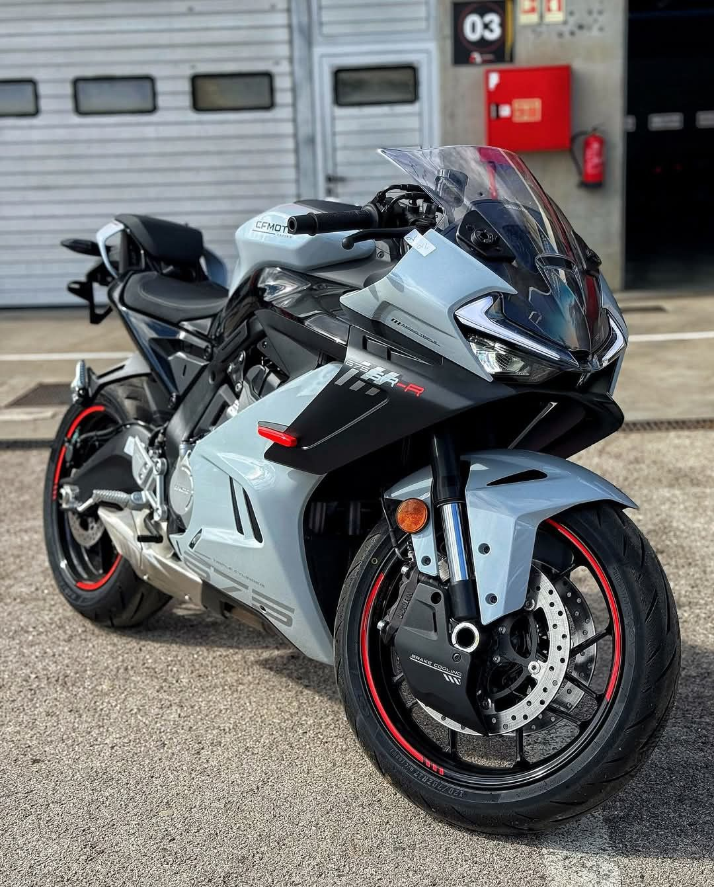
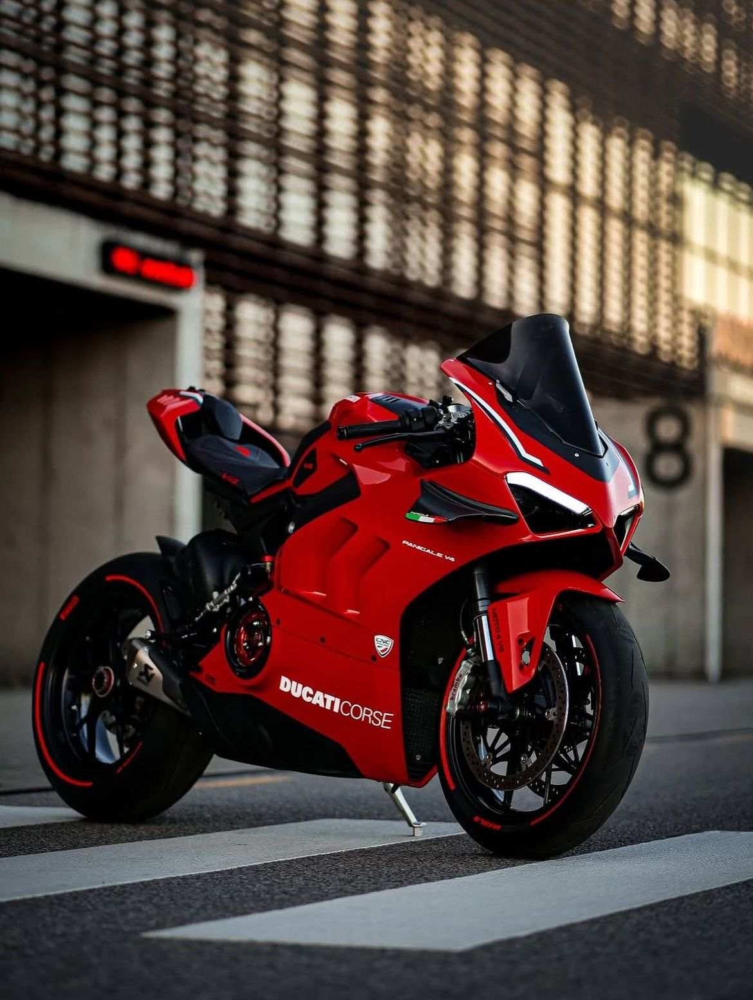

Hello! I’m Adam Harith Haikal Bin Malike, a motivated Diploma in Information Management student with strong skills in data organization, database management, and digital archiving. Proficient in SQL, Excel, and information retrieval systems, I enjoy transforming raw data into structured, accessible knowledge. Eager to apply my technical and analytical skills in internships or entry-level roles, I aim to contribute to efficient information systems while continuing to learn and grow in the field.
Skills | Performance Specs
HTML, CSS, JavaScript
Expertise in developing **fully responsive single-page applications**, utilizing vanilla JavaScript for interactive elements and leveraging CSS to apply dynamic, performance-focused styles. Focus on semantic HTML and modern web standards.
Database Management (SQL)
Proficient in writing complex **SQL queries** for data retrieval, manipulation, and ensuring **database integrity**. Experienced in designing relational database schemas for efficient information storage and retrieval.
Basic IT Troubleshooting
Adept at diagnosing and resolving common hardware and software issues. Possess strong analytical skills to quickly identify root causes and implement effective, timely solutions.
Team Collaboration
Proven ability to work effectively in group projects, adopting a supportive role to achieve collective goals. Highly capable of communicating technical concepts clearly within a team environment.
Digital Archiving
Skilled in creating and managing digital preservation strategies, including data migration, metadata tagging, and organizing digital assets for long-term accessibility and integrity.
Attention To Detail
Meticulous approach to data entry, coding, and record management, minimizing errors and ensuring high standards of data accuracy—essential for critical information systems.
Experience
Intern – Admission & Record Dept, Putra Medical Centre
Managed and organized medical data systems with precision, ensuring speed and accuracy much like a finely tuned machine.
Freelance – Data Entry
Transferred hundreds of physical documents into Google Forms for research purposes.
Part-time – Shop Retailer
Interacting with customers to assist them with purchases, handle sales transactions, and maintain a positive shopping environment.
Education
Sijil Pelajaran Malaysia (SPM)
Sekolah Menengah Kebangsaan Jitra
Result: 6A 1B 2C+
Diploma in Information Management
Universiti Teknologi MARA (UiTM) Kedah
Current CGPA: 3.4
Galleries | Pit Lane Showcase
A visual representation of my passion and dreams!


Showcasing my world on and off the road.
Download | Full Specification Sheet
Grab the polished, print-ready version of my professional resume.